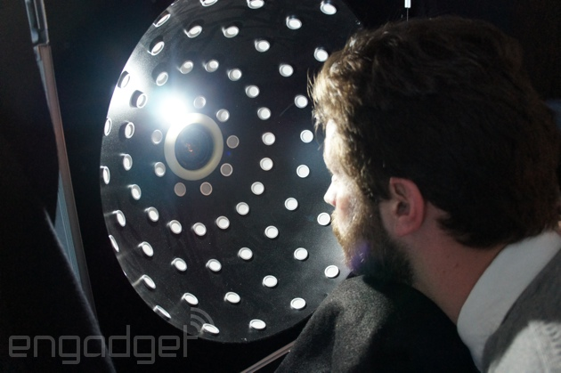
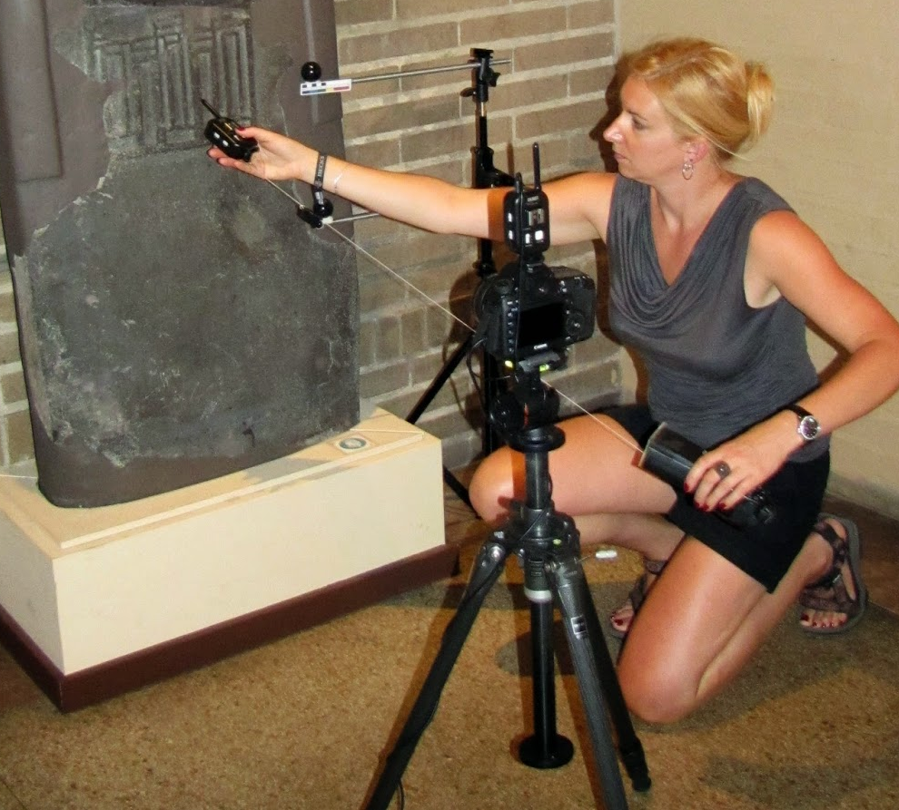

The hardware required for Spectral RTI is simply the camera and illuminators required for spectral imaging and the hemisphere illuminators required for RTI. The three major options for hemisphere illuminators are a dome, a swinging arc, and a hand-held flash.
Spectral imaging systems built for cultural heritage are available from MegaVision and PhaseOne. It is also possible to modify mass-produced cameras to achieve some of the benefits. Considerations include sensor, lens, and narrowband illuminators. The most familiar specification for sensors is the spatial resolution in megapixels. No less important is the avoidance of distorting filters, such as the Bayer filter used to capture red, green, and blue sub-pixels in a single instant. With spectral imaging, those three and more colors are captured in sequence. Similarly, most cameras are designed to block infrared light, which is important to spectral imaging. Fortunately, the removal of the infrared block filter is the easiest of modifications to introduce spectral capabilities into mass-market photographic equipment.
The lens for spectral imaging should be apochromatic. Ordinary lens optics, function like a prism and refract (bend) short wavelength (blue) light more than long wavelength (red) light. An apochromatic lens is designed to correct distortion from this effect. A compromise approach would be to use software to correct the registration variation across wavelengths.
The narrowband illumination puts the spectral in spectral imaging. Advances in LED (light emitting diode) lighting have made it affordable to illuminate an object with only a narrow portion of the electromagnetic spectrum. Note, however, that a color-changing LED that works by changing the combination of three color emitters is not the same as a narrowband LED. LED illuminators have many other advantages over filtered high-intensity broadband light for conservation and consistency.
As of 2017, RTI requires captures from lights of equal intensity and distance from the object around a virtual hemisphere. One approach is to use a physical dome, either solid or mesh, with many lights embedded and triggered individually. The main advantage of a physical dome is that all the captures can be automated once the dome is in place. If the dome is stable, the light positions are known and need not be calculated for each individual sequence. The dome must be large so that the difference of angle of incidence of light striking one part of the frame is not significantly different from the angle of incidence in other parts of the frame. Roughly, the radius of the dome should be at least four times the radius of the object being imaged. A large dome can be difficult to transport and move for object handling. The fifty or so separate illuminators and materials increase the cost.

A swinging arc, such as the RTI arc produced by MegaVision, has the major advantages of a dome with greatly increased portability. The MegaVision arc used by the Jubilees Palimpsest Project in 2017 can be transported by air in checked luggage. Once assembled, it has a radius of four feet. The arc swings into seven positions equally distributed above the equator of the focal plane. Sixteen lights are positioned on the arc, allowing for up to 112 light positions. Typically, the even and odd lights on the arc alternate between arc positions, creating 56 light positions evenly distributed around the virtual hemisphere. The arc is stable enough that the light positions do not need to be recalculated for each sequence.
The most affordable but most time-consuming method for RTI capture uses a handheld flash. The flash must be radio (not infrared) triggered, but otherwise can use mass-market photographic equipment. A flashlight or lamp can be used if the light is sufficiently uniform (i.e., no bright or dark spots resulting from unevenness of light). The flash can be positioned by hand around the object. The distance from the object is the most important (for exposure settings). A string or laser distance finder can be used to maintain the proper radius. The position on the virtual hemisphere is flexible, but should be distributed as evenly as possible. (Note that the common practice of shooting the hours of the clock at low, middle, and high leads to a reduced density of captures from low positions.) The major disadvantage of the hand-held flash method is that it is the most time-consuming. First, it takes longer to position the flash at each position. Second, the light positions must be calculated from the reflection on a shiny sphere for each sequence.
If the goal is to process raking images without full RTI, then the only concern with position and exposure are simple aesthetics and photography (uniformity and calculation of light position are not required).